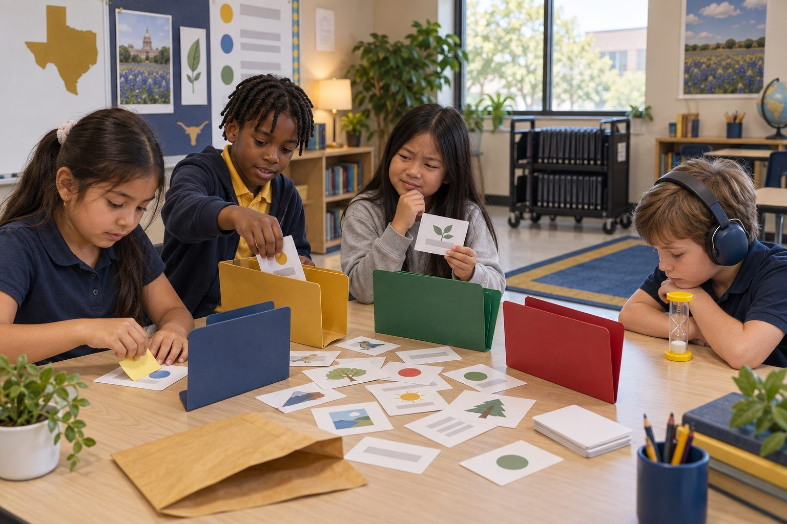

Học tập của học sinhdành cho Lớp K–2
Kiểm Tra Hai Nơi
Một người máy trợ giúp rất tự tin nói những điều lúc đúng lúc sai, và các em trở thành người làm chủ việc học bằng cách kiểm tra mỗi câu trả lời ở hai nơi trước khi tin.

Tất cả hoạt động Học tập của học sinh
Học sinh giải cứu ổ lưu trữ giả vờ bừa bộn của một bạn cùng lớp, tự nghĩ ra cách đặt tên và sắp xếp thư mục, dùng lịch sử phiên bản để lấy lại bài bị mất, và phát hiện những gì bản tóm tắt ghi chú của AI đã bỏ sót.
Ngày nay học sinh lưu rất nhiều bài vở trong sổ tay và ổ lưu trữ kỹ thuật số, và câu "Em không tìm thấy" làm mất thời gian học thật sự. Trong bài học kết hợp này, các nhóm mở một "ổ lưu trữ" bằng giấy của một học sinh hư cấu tên Theo, đầy những tệp tên là Tài liệu không có tiêu đề (2) và asdfgh. Các nhóm thi nhau tìm một bài tập, rồi xây dựng thư mục và quy tắc đặt tên, dùng một bản lịch sử phiên bản in sẵn để khôi phục đoạn văn mà một bạn cùng nhóm đã xóa, và so sánh ghi chú chuyến tham quan của Theo với một bản tóm tắt của AI nghe có vẻ đầy đủ nhưng lại bỏ mất những chi tiết quan trọng nhất. Học sinh ra về với một kế hoạch sắp xếp tệp của riêng mình, có thể dùng ngay ngày mai trên thiết bị thật.
Khởi động
Phát cho mỗi nhóm phong bì Ổ Lưu Trữ Của Theo. Nói: "Cô giáo của Theo cần cuốn nhật ký cây đậu của bạn ấy ngay bây giờ. Các em có 60 giây. Bắt đầu!" Các nhóm đổ thẻ ra và tìm kiếm. Dừng đồng hồ. Hỏi: "Ai đã tìm thấy? Làm sao em biết đó là tệp nào? Điều gì làm em chậm lại?" Liệt kê những điều làm chậm lên bảng (tên tệp chẳng có nghĩa gì, bản sao của bản sao, mọi thứ dồn thành một đống).
Ghi chú cho người điều phốiHầu hết các nhóm phải mở (đọc phần xem trước trên) gần như mọi thẻ. Sự bực bội đó chính là mục đích: tên tệp không cho chút manh mối nào.
Khám phá
Các nhóm quyết định bốn nhãn thư mục (đa số sẽ chọn theo môn học: Toán, Khoa học, Đọc & Viết, Xã hội) và viết lên bìa hồ sơ. Sau đó các em đọc phần xem trước của từng thẻ, quyết định nó thuộc thư mục nào, và viết một cái tên tốt hơn lên giấy ghi chú dán đè lên tên cũ. Thử thách: "Tên mới phải cho em biết bên trong có gì mà không cần mở ra." Để ý Thẻ 8 (một bản trùng lặp) và Thẻ 13 (một danh sách có số điện thoại của các bạn cùng lớp), và hỏi các nhóm nghĩ nên làm gì với những thẻ đó.
Ghi chú cho người điều phốiThẻ 13 là khoảnh khắc công dân số: số điện thoại của người khác không nên nằm trong thư mục chung của lớp. Cách làm đúng là báo cho giáo viên và giữ kín, không phải đổi tên.
Làm mẫu
Tập hợp cả lớp. Thu thập vài cái tên mới và so sánh. Giới thiệu quy tắc của lớp: Môn học – Chủ đề – Ngày, ví dụ Khoa học – Nhật ký cây đậu – 3 tháng 10. Hỏi: "Vì sao ghi môn học trước?" (Tất cả tệp khoa học sẽ xếp cạnh nhau.) "Vì sao ghi ngày?" (Em biết được tệp nào mới nhất.) Rồi nêu vấn đề thứ hai lên bảng: CUỐI CÙNG cuối cùng THẬT và Bản sao của Bản sao của áp phích. Giải thích: "Thay vì tạo bản sao, hầu hết ứng dụng sổ tay và ổ lưu trữ đều giữ một lịch sử phiên bản, tức là danh sách được lưu lại của mọi thay đổi, ai đã thay đổi và khi nào. Em có thể quay lại phiên bản cũ hơn mà không cần tạo bản sao."
Ghi chú cho người điều phốiKhông gắn với một công cụ cụ thể. Hãy nói "tìm mục Lịch sử phiên bản hoặc Lịch sử tệp trong menu" thay vì nêu tên một thương hiệu.
Luyện tập
Các nhóm đọc Phần 1 của Phiếu B, lịch sử phiên bản của Báo Cáo Về Cú mà Theo dùng chung với bạn. Trên Phiếu C, các em trả lời: Phiên bản nào vẫn còn đoạn văn về viên thức ăn thừa của cú? Ai đã xóa nó, và khi nào? Theo nên làm gì? Hướng các nhóm đến câu trả lời: khôi phục phiên bản lúc 2:15 chiều thứ Ba (hoặc chép lại đoạn văn từ phiên bản đó) và nói chuyện tử tế với bạn cùng nhóm. Hỏi: "Bạn cùng nhóm có cố ý xấu không, hay đó có thể là nhầm lẫn? Lịch sử phiên bản giúp em giải quyết chuyện này một cách công bằng như thế nào?"
Ghi chú cho người điều phốiLịch sử phiên bản còn cho thấy ai đã làm phần việc nào trong dự án nhóm. Có em thấy điều đó yên tâm; có em thấy bất ngờ. Cả hai đều là chủ đề thảo luận tốt.
Vận dụng
Các nhóm đọc Phần 2 của Phiếu B: ghi chú chuyến tham quan của Theo, rồi đến bản tóm tắt ghi chú đó của AI. Nói: "Theo đã nhờ một công cụ AI rút ngắn ghi chú của bạn ấy. Bản tóm tắt ngắn gọn và nghe rất ổn. Nhiệm vụ của các em: kiểm tra nó với ghi chú." Các nhóm gạch dưới trong ghi chú mọi chi tiết bị thiếu trong bản tóm tắt, và khoanh tròn bất cứ điều gì trong bản tóm tắt mà ghi chú không có. Sau đó các em xếp hạng: nếu Theo chỉ đọc bản tóm tắt, chi tiết bị thiếu nào sẽ gây rắc rối lớn nhất?
Ghi chú cho người điều phốiNhững điểm cần phát hiện: giấy xin phép phải nộp trước thứ Sáu, mang theo bình nước, giờ xe buýt đổi thành 7:45, và lời nhắc về dị ứng đều bị thiếu, còn bản tóm tắt lại thêm "mang tiền ăn trưa", điều mà ghi chú không hề nói. Bản tóm tắt không có ý xấu; nó chỉ chọn những gì nghe có vẻ quan trọng và đoán.
Suy ngẫm
Học sinh hoàn thành phần còn lại của Phiếu C: bốn thư mục của riêng mình, quy tắc đặt tên, điều mình sẽ làm thay vì tạo bản sao, và một quy tắc cho bản tóm tắt của AI (ví dụ: "Em kiểm tra bản tóm tắt với ghi chú của mình trước khi bỏ ghi chú đi"). Hai hoặc ba em chia sẻ quy tắc về AI của mình. Kết thúc bằng câu: "Sắp xếp tệp gọn gàng không phải để cho đẹp. Mà là để tìm được bài học của mình khi cần."
Ghi chú cho người điều phốiTìm những quy tắc về AI nêu một hành động cụ thể (kiểm tra, so sánh, giữ bản gốc), chứ không chỉ "AI có thể sai."
Mọi thứ đều làm được với thẻ tệp bằng giấy, bìa hồ sơ hoặc phong bì thật, giấy ghi chú dán để viết tên mới, cùng lịch sử phiên bản và ghi chú in sẵn. Lịch sử phiên bản có thể được diễn lại: bốn học sinh, mỗi em cầm một phiên bản của Báo Cáo Về Cú, xếp hàng theo thứ tự thời gian; cả lớp "cuộn ngược lại" dọc hàng để tìm phiên bản còn đoạn văn bị mất.
Sau vòng làm trên giấy, học sinh mở bản sao thư mục thực hành của mình trong ứng dụng ổ lưu trữ hoặc sổ tay mà trường đang dùng, bằng tài khoản do trường quản lý. Các em tạo thư mục theo môn học, đặt lại tên cho từng tệp theo quy tắc của lớp, và mở lịch sử phiên bản của một tệp để tìm một phiên bản cũ hơn mà giáo viên đã tạo từ trước. Với bước AI, giáo viên dán ghi chú chuyến tham quan trên Phiếu B vào một công cụ AI được khu học chánh phê duyệt trên màn chiếu, yêu cầu một bản tóm tắt ngắn, và cả lớp kiểm tra bản tóm tắt mới với ghi chú, giống như đã làm với bản của Theo. Học sinh không dùng tài khoản AI riêng của mình.
Có cần màn hình không? Vòng làm trên giấy giúp suy nghĩ hiện ra rõ ràng: mọi lựa chọn phân loại và đặt tên đều bày ra trên bàn. Vòng kỹ thuật số bổ sung bằng chứng mà giấy không có được, vì học sinh cho thấy mình biết đổi tên, sắp xếp và khôi phục phiên bản cũ ngay trong ứng dụng thật mà các em sẽ dùng ngày mai, và các em được tận mắt thấy một bản tóm tắt AI trực tiếp bỏ sót thông tin.
Những gì bạn có thể quan sát hoặc thu thập được nếu hoạt động thành công.
Học sinh sắp xếp và đặt tên tệp kỹ thuật số, khôi phục bài làm bằng lịch sử phiên bản, và so sánh bản tóm tắt của AI với ghi chú gốc để tìm các chi tiết bị thiếu.
Ngày mai, học sinh đổi tên và sắp xếp ba bài làm của chính mình theo kế hoạch, và giáo viên liếc qua kiểm tra một thư mục. Ở nhà, học sinh có thể chỉ cho một người thân quy tắc đặt tên của mình và giúp sắp xếp một thư mục ảnh hoặc giấy tờ của gia đình theo cùng cách đó.